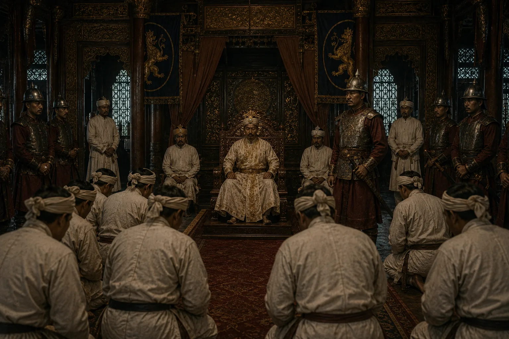

Burmese Atrocities (Manor Din) Under Puppet Jogeswar Singha
1821–1824 · The days of the Burmese

Burmese install powerless puppet Jogeswar Singha while massacring tens of thousands of Assamese civilians, depopulating entire districts.
Sources have not yet been catalogued for this record.
People: Jogeswar Singha, Maha Bandula